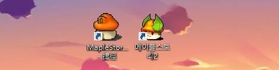

它是《新楓之谷》
的續作。與前作不同的是，《楓之谷2》採用的是3D視角。
遊戲繼承了前作的鍵盤操作方式，跳躍與爬梯子保留。但《楓之谷2》增加了不同的移動方式，
例如遊戲中能使用氣球來飄過無陸地連接的兩端。前作中的計程車仍被保留，
但改為只能前往角色曾去過的地圖，
且費用隨距離增長而增長。
遊戲的背景音樂有些原創，有些使用《新楓之谷》背景音樂來稍加修改。
===騎士===
主要為團隊增防增攻BUFF的位置
*團隊坦克*
===狂戰士===
主要為物理攻擊輸出位置
*近戰輸出*
===弓箭手===
主要為遠程攻擊及附加對敵人負面BUFF位置
*遠程輸出*
===重炮手===
主要為中程攻擊輸出位置
*強大範圍傷害*
===符文劍士===
主要為近距離攻擊輸出位置
*飛來飛去的劍士*
| 楓之谷一代與二代比較 | ||
|---|---|---|
| Maple Story | Maple Story 2 | |
|
 一年前在我筆電桌面上同時存在的兩代 現在兩款都不存在了 | ||
| Dimensions | 2D | 3D |
| 畫質 | 中 | 高 |
| 職業數量 (取完全轉職) |
約37個 | 9個 |
| 營運時間 (韓版) |
13年 | 1年 |
| 電腦配備要求 | 低 | 低 |
楓之谷2電影短片式預告 :